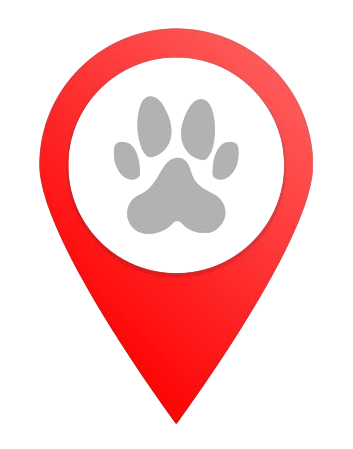

Editar reporte
de mascota
NOMBRE
Modificar foto
Ver vista previa
Mapa de Mascota Vista
Buscar
Buscá un punto de referencia para reportar la mascota. Por ejemplo, la ubicación donde lo viste por última vez.
Guardar
Reportar como encontrada
Eliminar reporte